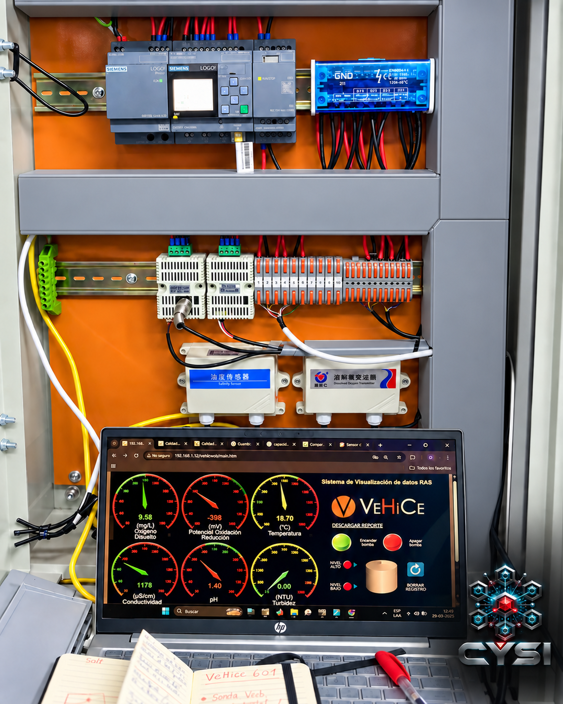
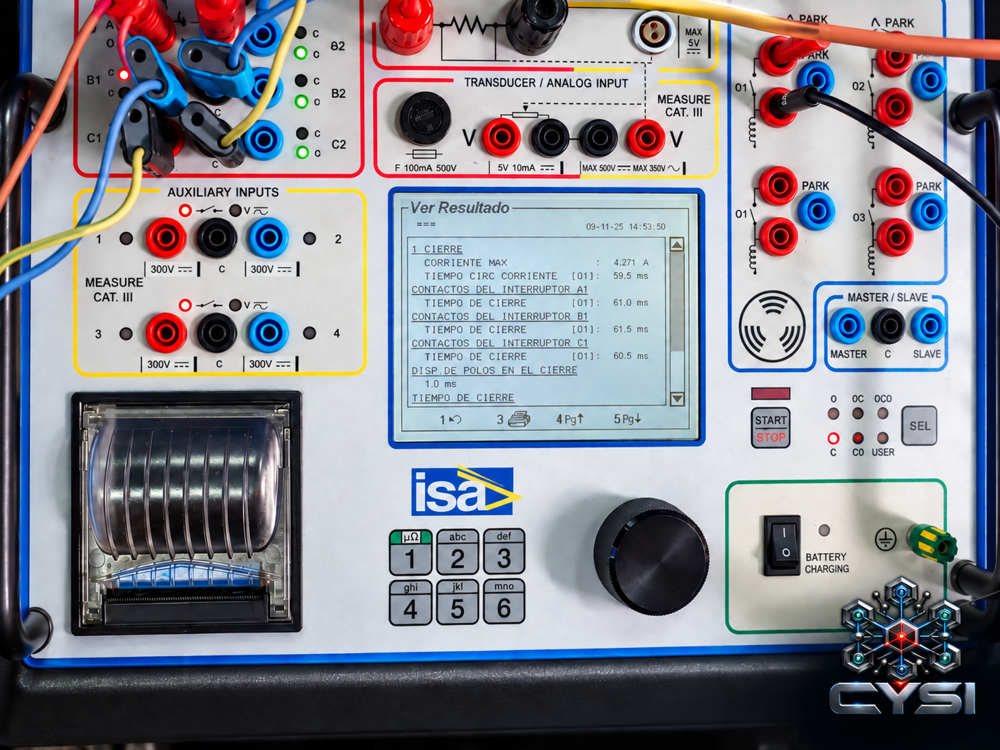

Ingeniería e Integración
Diseño técnico, arquitectura, especificaciones e integración entre equipos, procesos y sistemas.
Diseñamos sistemas que conectan equipos, datos y personas para lograr operaciones más estables, medibles, eficientes y preparadas para evolucionar.
G(s)=Y(s)/U(s)
u(t)=Kpe(t)+Ki∫e(t)dt+Kdde/dt
Partimos por el problema técnico y construimos una solución integrable, medible y escalable.
Diseño técnico, arquitectura, especificaciones e integración entre equipos, procesos y sistemas.
Datos, automatizaciones e IA para ordenar la operación y convertir información en decisiones.
PLC, supervisión, lógica, secuencias, control y visualización de procesos.
Selección, integración, medición y acondicionamiento de variables de proceso.
Planos, esquemas, especificaciones, trazabilidad y respaldo para el ciclo de vida técnico.
Evaluación, eficiencia y soluciones energéticas con enfoque en desempeño y sostenibilidad.
Control, simulación, comunicaciones y visualización trabajando como un solo sistema.
PID
Modelado y ajuste para procesos más estables, rápidos y eficientes.
STATE SPACEẋ(t) = Ax(t) + Bu(t)
y(t) = Cx(t) + Du(t)
G(s) = K(τs+1)/(s²+2ζωₙs+ωₙ²)
Representamos el comportamiento del sistema antes de intervenir el proceso real.
OT / ITIntegramos control, supervisión y datos sin perder trazabilidad del origen.
T(x,y)Gráficos claros para detectar comportamiento, tendencia, eficiencia y anomalías.
Trabajos reales que conectan diseño, control, medición y ejecución en terreno.

Integración con PLC Siemens LOGO!, transmisores y monitoreo de oxígeno disuelto, ORP, temperatura, conductividad, pH y turbidez.
Diagnóstico técnico e intervención orientada a operación, control, continuidad y mejora funcional del equipo.

Verificación de tiempos de cierre, corriente máxima y respuesta de maniobra mediante instrumentación especializada.
Un cerebro digital que integra fuentes operacionales, automatiza flujos y entrega información trazable para apoyar decisiones.
Soluciones con fundamento de ingeniería y visión de largo plazo.
Conectamos tecnología, personas y procesos de forma simple y efectiva.
Información clara, ordenada y utilizable durante todo el ciclo de vida.
Implementamos por etapas para crecer sin sobredimensionar la solución.